One login. Every part of your compliance workload.
From day-to-day evidence, HR, tasks and logs to expert-led inspection preparation — built around the categories HIW actually inspects.
Compliance Dashboard
A single-screen, traffic-light view of your whole practice, rolled up from the categories HIW actually inspects against.
- Registration & documentation, staff training & DBS, decontamination (WHTM 01-05), radiation protection (IR(ME)R), health & safety, and policies
- A 6-month compliance-score trend chart, a category-status donut, and an expiry bar chart, on one screen
- For group-owned practices: a "this practice vs. group average" comparison panel
- Drill down from any category into the specific outstanding items, with automated reminders ahead of expiry

Certificate & Evidence Upload Portal
Every certificate and piece of evidence, organised the way HIW expects to see it — with a complete, defensible audit trail.
- Upload by category — staff DBS, indemnity insurance, calibration certificates, fire safety, radiation protection and more
- Expiry date capture at upload drives the dashboard and reminder notifications automatically
- Full version history preserves an audit trail for every document
- Verification workflow: a Principal or Practice Manager signs off staff-uploaded documents as verified
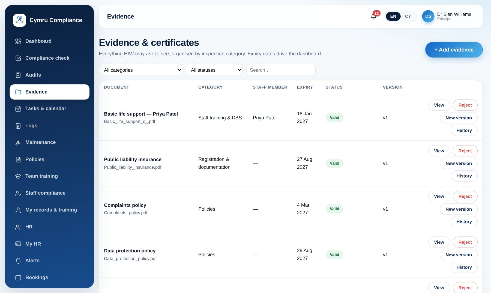
Induction Training
A structured onboarding pathway for new staff that targets HIW's most-cited recurring failure head-on: incomplete pre-employment and induction checks.
- Guided, step-by-step onboarding pathway for every new starter
- Tracks completion status per staff member in real time
- Feeds directly into the practice compliance dashboard
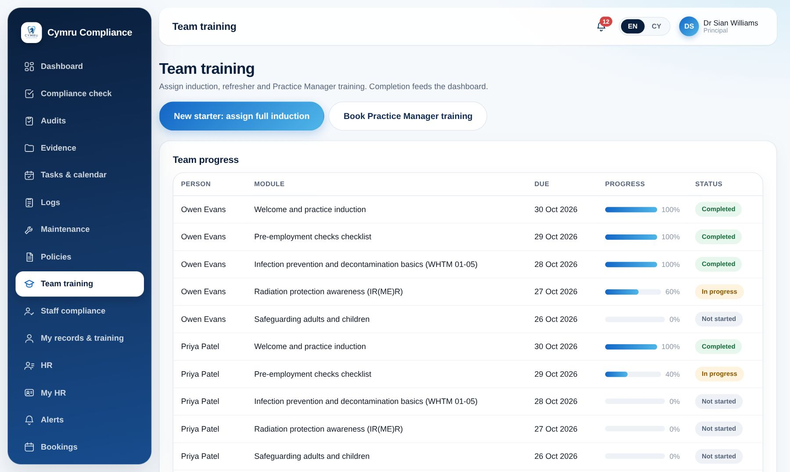
Compliance Check (Self-Assessment)
Mock-inspect yourselves against the exact structure HIW uses, well before the real inspection is announced.
- A structured self-audit tool mirroring HIW's actual inspection framework
- Generates a clear gap report you can act on immediately
- Feeds directly back into the dashboard's red/amber/green status and action list
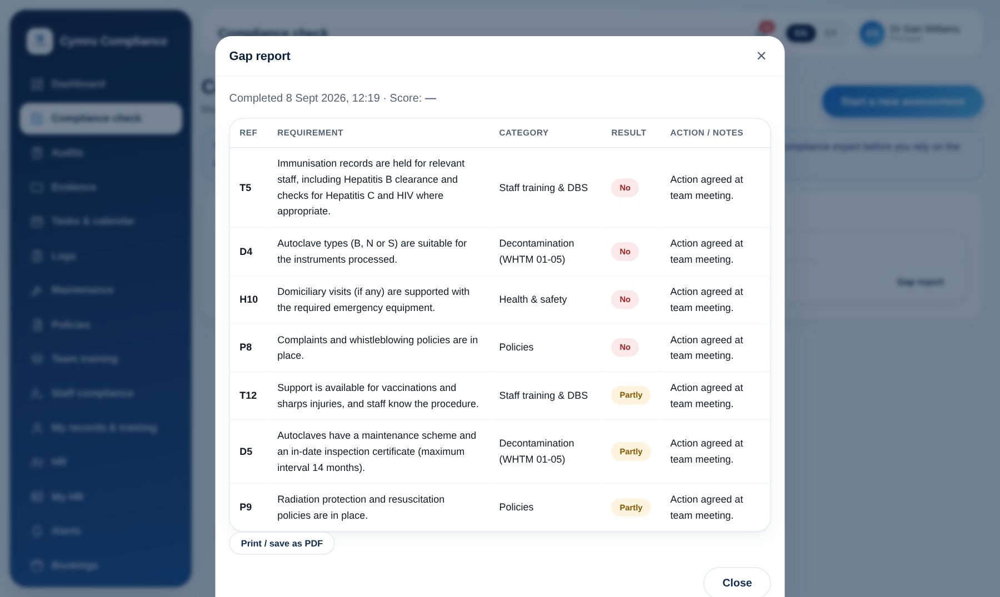
Additional Compliance Training
Ongoing, CPD-aligned refresher training so certifications never quietly lapse.
- Annual infection control refresher, radiation protection updates, safeguarding renewals and more
- Assign to an individual, a whole practice, or — for Group Admins — across multiple practices in one action
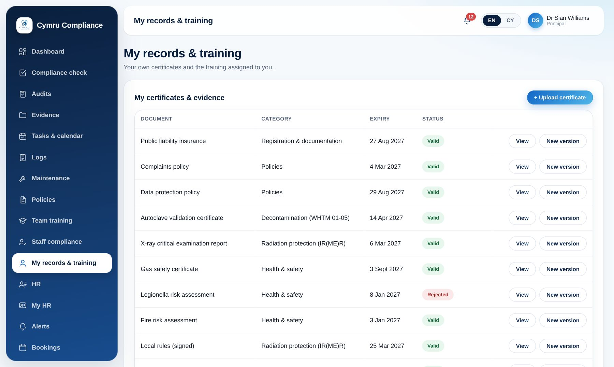
Practice Manager Training
A dedicated training track for practice managers — reflecting how central the role is to HIW inspection outcomes.
- Structured course covering HIW inspection readiness end-to-end: what inspectors look for, running the self-assessment check, evidence management best practice, and leading a team through an announced inspection
- Delivered as guided e-learning plus live/webinar sessions with a compliance expert
- Completion feeds the compliance dashboard as a practice-level credential — "HIW-trained practice manager in post"
- Available as a one-off purchase, included in Practice Plus, or bulk-booked by a Group Admin across several practices
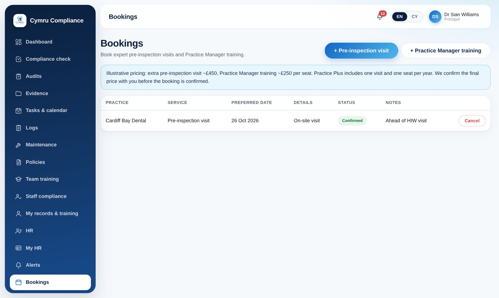
Pre-Inspection Visit & Compliance Check
A human compliance expert runs a genuine mock inspection ahead of your real one — the highest-margin, most differentiated part of the service.
- Bookable service: an expert visits in person, or conducts a remote review, ahead of a scheduled or anticipated HIW inspection
- Booking flow is tied to your practice's own dashboard data, so the reviewer prepares in advance
- Output is a written gap report, loaded straight back into your dashboard
HR & Staff Records
Everything about your team in one secure place — records, leave, absence and recruitment — linked straight to the compliance dashboard.
- Staff profiles with photo, role, contract details and emergency contacts, visible only to those who should see them
- GDC registration, indemnity and DBS expiry dates tracked per person, with alerts before anything lapses
- Leave requests and approvals with entitlement balances, a team calendar with Welsh bank holidays, and absence recording
- A recruitment checklist for every new starter, covering the pre-employment checks HIW cites most
- Staff self-service: each team member sees their own record and requests their own leave

Tasks & Calendar
The recurring jobs that keep a practice compliant, scheduled, assigned and ticked off — with proof that they were done.
- A ready-made library of recurring compliance tasks, from daily checks to annual reviews
- Assign to a named team member; see everything on a month calendar or as a list
- Mark done with a note — overdue and due-soon items are flagged on the dashboard
- Next due date is calculated automatically from the task frequency

Digital Logs
Replace the paper logbooks. Every entry is signed, time-stamped and cannot be edited afterwards.
- Autoclave and washer-disinfector cycles, emergency drugs and oxygen checks, fridge temperatures, legionella and X-ray logs
- Pass/fail checks with guidance, so a missed reading is obvious
- Insert-only records: the audit trail an inspector wants to see
- Recent entries and gaps visible at a glance

Maintenance Register
Every service, test and certificate for your equipment and premises, with the next due date worked out for you.
- Gas safety, electrical (PAT), fire equipment, autoclave servicing, compressor, X-ray testing and more
- One click on “Done today” rolls the next due date forward
- Items due within 60 days feed the alerts bell and the e-mail digest
- Group Admins see maintenance across every site

Policies with Sign-off
A library of policy templates in English and Welsh, with proof that every team member has read and confirmed each one.
- 15 policy templates covering the areas HIW expects, with review dates
- Staff read and confirm in the portal; the practice sees exactly who has and hasn't
- “To review” list for each team member, so nothing is missed after a policy update

Staff Compliance & Training Matrix
See at a glance who is up to date on training, recruitment checks and policies — person by person.
- A training matrix across 21 core courses, each with its own validity period
- Recruitment and induction progress for every starter
- A compliance score per team member, and a colour-coded view of gaps
- Assign training to one person, a whole practice, or a whole group

Audits
Run the audits inspectors expect, then act on the gap report — with the results feeding back into the dashboard.
- HIW self-assessment, infection prevention & control, records, antibiotic prescribing, patient survey and disability access
- Answer yes / partial / no with notes, and complete to generate a gap report
- History of completed audits, ready to show an inspector
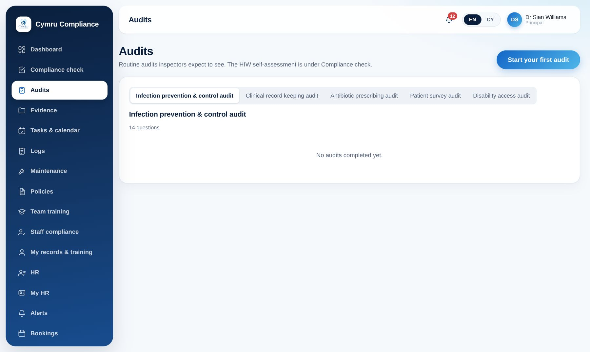
Alerts Before Anything Expires
One bell, one list: certificates, DBS, tasks and maintenance that are overdue or coming due — plus an e-mail digest.
- In-app alerts for evidence, staff registrations, tasks and maintenance
- A summary e-mail so nobody has to remember to log in
- Group Admins see alerts across every practice
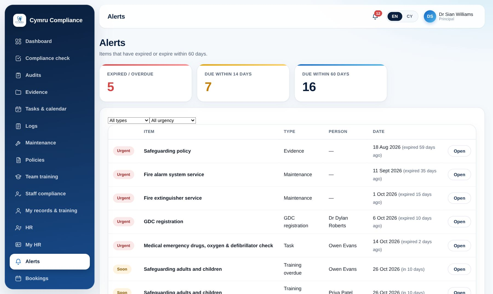
Group Accounts
For corporate groups that own two or more Welsh practices — one login, one bill, a real view of risk across every site.
- A Group account sits above one or more practices; each practice belongs to at most one group
- Group-wide compliance average, a count of practices in green/amber/red, and a compliance-score-by-practice chart
- A ranked "needs attention" panel surfacing the most urgent issues across the whole group
- Consolidated group billing, or per-practice recharge — configurable at setup
- Bulk-book practice manager training or pre-inspection visits across multiple sites in one action
- Strict data isolation: a Group Admin only ever sees their own group's practices
- Group HR: staff, leave and expiring registrations across every site in one roll-up
- Group training: assign a course to selected practices at once and track completion in a single matrix
- Staff compliance, maintenance and tasks rolled up by practice, with a full audit log of group-level access

Every site, one screen at a time
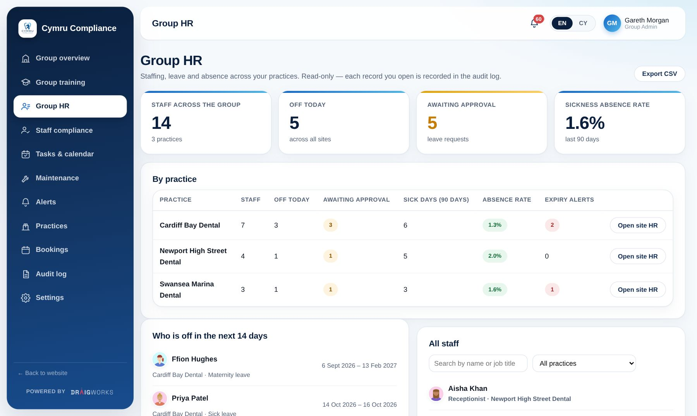
Group HR — staff, leave and expiries by practice
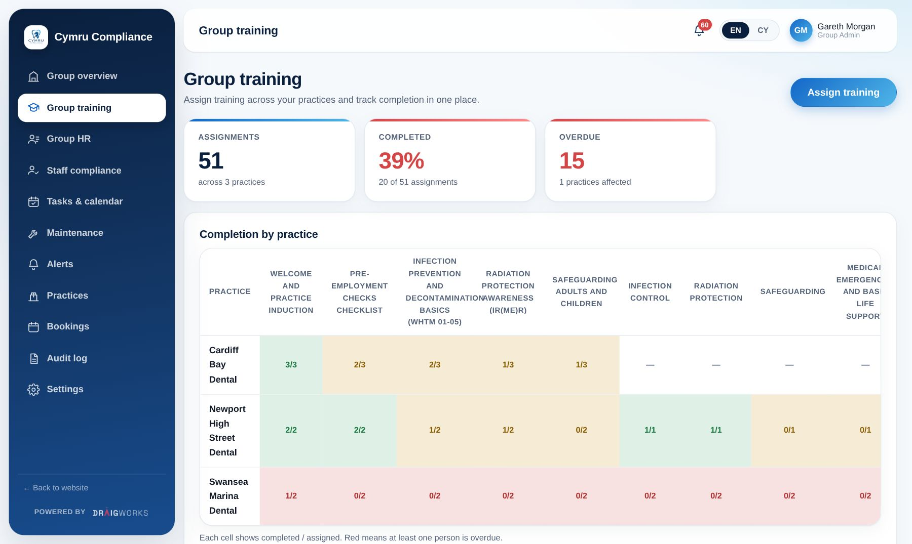
Group training — assign once, track every site
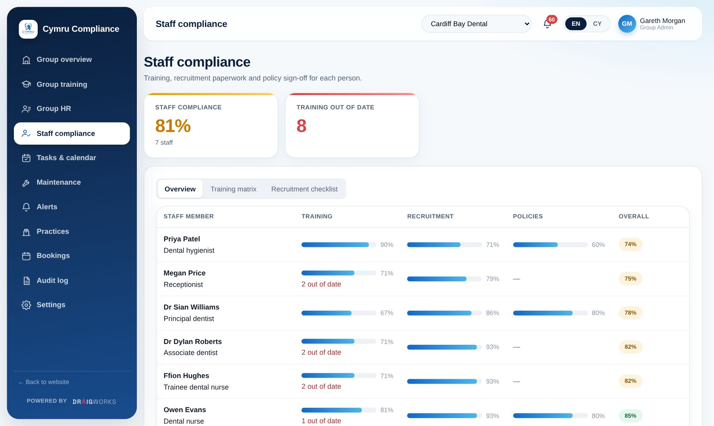
Staff compliance across the whole group
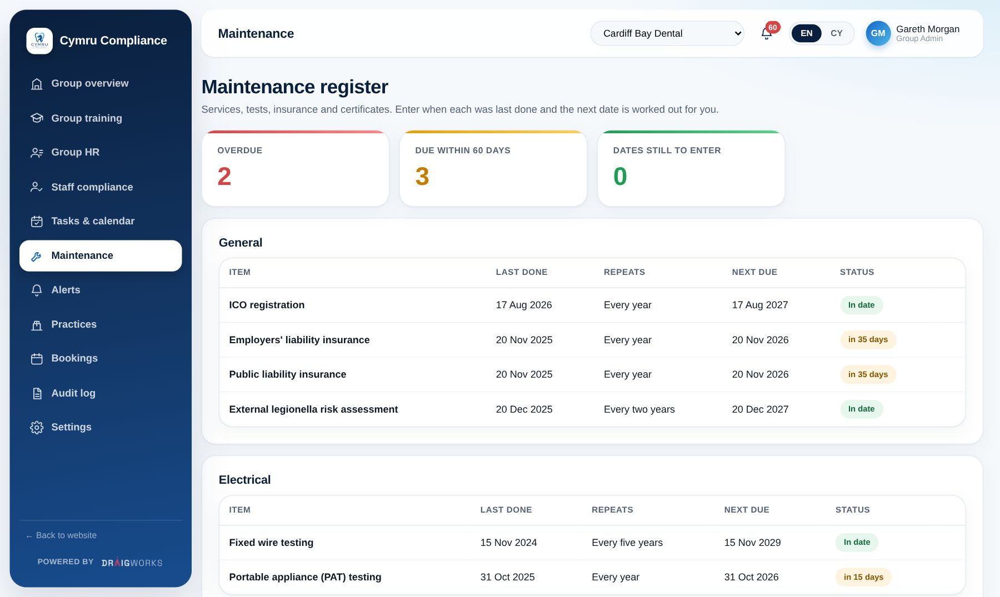
Maintenance and tasks, site by site
Role-based access, and a full audit trail
Every action — who viewed, edited or uploaded what, and when — is logged. Practice-level and group-level data isolation means no practice or group ever sees another operator's data.